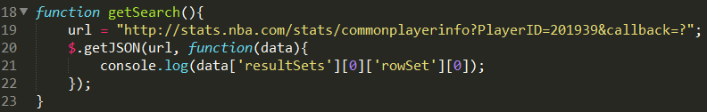
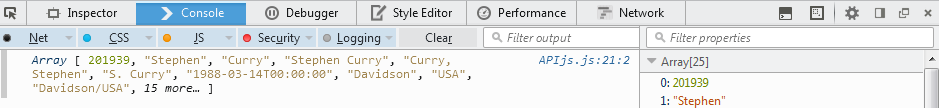

Connect with and use the NBA Stats API
Now that you can properly build and read NBA stats queries, it's time to start coding. One of the first set of problems you may run into are cross domain errors. My first attempt at creating code (using JavaScript) that would return results from a HTTP request instead gave me the error message below:
Cross-Origin Request Blocked: The Same Origin Policy disallows reading the remote resource at http://stats.nba.com/stats/commonplayerinfo?PlayerID=201939. (Reason: CORS header 'Access-Control-Allow-Origin' missing)
Here is what is happening when you receive this error: SOP stands for Same Origin Policy and was originally created as a security measure that would not allow cross origin resource sharing, or CORS. CORS is a security measure that allows for scripts to make cross-site requests. To use this feature, the hosting server needs to return data including a special CORS header. The server that is hosting this API does not currently return this proper header. I will not go further into detail about the server side of CORS, but if you are interested you can read the Mozilla documentation here. This means, in theory, one can only make requests from the same domain. This isn't really helpful in dealing with an API, but luckily there are ways to work around this.
In preliminary searches, since I was coding in JavaScript, most of the solutions I found suggested using JSONP with jQuery. To ensure that this solution works for you, you are only allowed to use GET as your request method. To test if this solution worked for me, I used the method getJSON(). As per the documentation about JSONP, I included a callback parameter to my URL. Lastly, I printed to the console to make sure that my results were what I would expect before attempting any further code. So what's happening here is that a GET request is being made through the URL provided in the first parameter of getJSON. That request is returning a script block through JSONP that holds the object with our data. The second parameter of getJSON will call a function that reads that script block.
 Although this is a quick fix and a solution I find acceptable for this API (while coding in JavaScript), I want to detail the concerns I have with it for other projects and caution usage. JSONP does not do any security checks on the site that you are requesting data from. If the site was malicious, you would have no guard against an attack while accessing their server, so make sure the site you're requesting from is trustworthy. Lastly, if the server you were requesting data from became compromised, your site could become compromised as well.